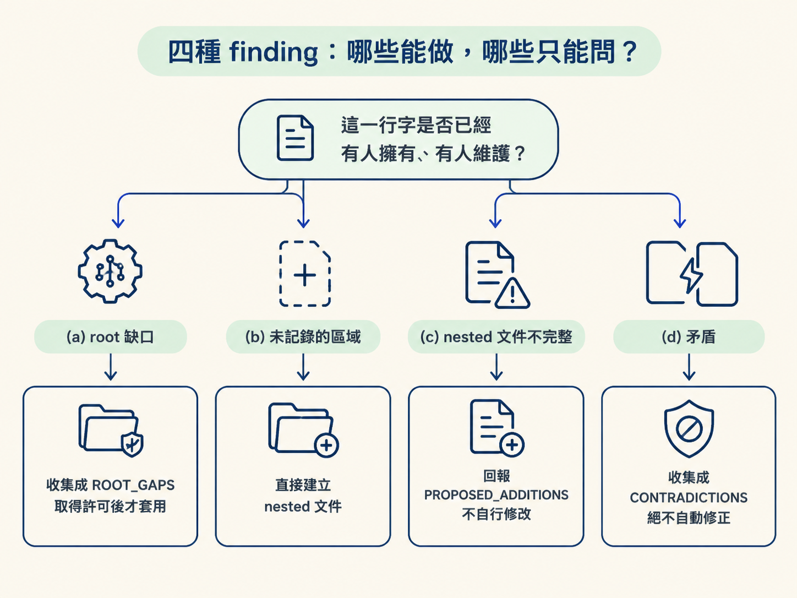
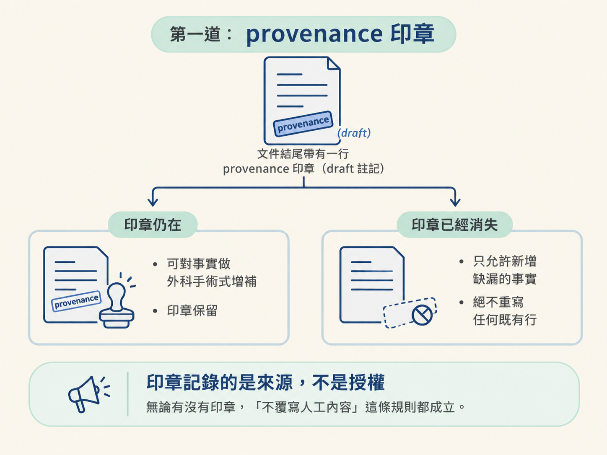
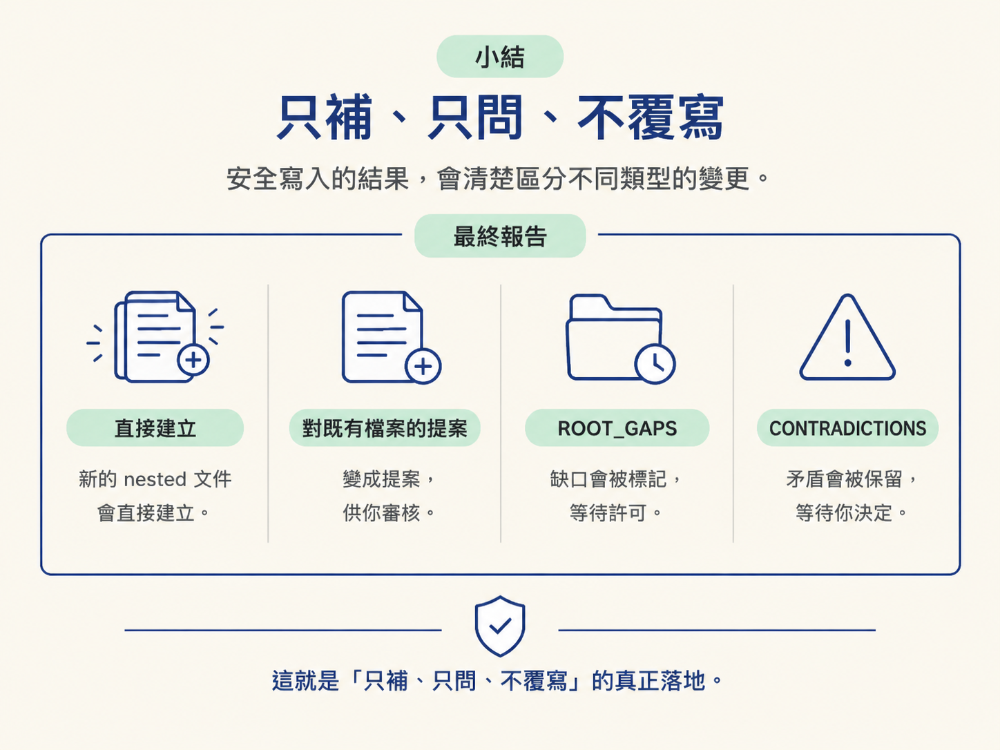

完成這一節後，你應該能讓 Phase 4 的 gap-fill 實際跑起來，分辨「缺漏」與「矛盾」，並理解三道保護既有內容的規則：provenance 印章、proposed-diff，以及 permission-gated 套用。
前面幾節處理的，多半是「沒有說明書」的情境：專案是空的、剛 scaffold 完成、有程式碼卻沒有文件，或只需要檢查某個區域。但真實工作裡，更常遇到另一種情況：root 說明書早就存在，只是內容已經和現在的程式碼對不上。
這份文件可能是半年前寫的，也可能是同事隨手補上的，或是上一次 /audit 留下的結果。裡面有些內容仍然正確，有些已經過期，甚至可能和程式碼互相矛盾。
危險之處在於：它也許是有人仔細維護過的內容。若 /audit 像 Phase 2 那樣整份重寫，就像拿油漆滾筒蓋過手寫的維修紀錄，連原本正確、重要的部分也會一起消失。
所以 Phase 4 的重點不是「怎麼寫得更多」，而是「怎麼只補該補的地方」。這一節會看四種 finding，以及支撐整條安全寫入流程的三道保護。
當命令沒有指定區域、codebase 存在，而且 root AGENTS.md 已經存在時，就會進入 Phase 4。剛完成舊版 CLAUDE.md 遷移的專案，也會走這條路線。
它會拿整個 codebase 對照現有說明，找出真正的漏洞；但它採取的是保守的 gap-fill。掃描範圍和 Phase 2 一樣大，大型 repo 仍然可以把閱讀工作交給唯讀的 scout 子代理。不過，目標已經不同：
真正寫入檔案的工作仍由主線程負責。唯讀 scout 可以幫忙找證據，卻不應該自行修改文件。這樣能避免掃描者一邊判斷、一邊改寫，最後沒人說得清楚哪些內容是原本存在的，哪些是剛剛被加進去的。
掃描完成後，發現會分成四類。分類不是報表上的裝飾，而是決定後續能不能直接寫檔的安全開關。
| 類別 | 發現了什麼 | 處理方式 |
|---|---|---|
| (a) root 缺口 | root 少了一個全局事實，例如日常指令、技術棧元素、專案級通則，或 scope 已經寫明、root 卻沒有記錄的 build approach | 收集成 ROOT_GAPS，取得許可後才套用 |
| (b) 未記錄的區域 | 某個主要區域有獨特慣例或容易踩到的坑，卻沒有 nested 文件 | 直接建立 nested 文件；這是建立，不是覆寫 |
| (c) nested 文件不完整 | 既有 nested 文件漏掉某件現在仍然為真的事 | 回報成 PROPOSED_ADDITIONS，不自行修改 |
| (d) 矛盾 | 文件內容和程式碼、規格或 scope 不一致 | 收集成 CONTRADICTIONS，交給你決定，絕不自動修正 |
這四類其實是沿著一條界線切開的：這一行字是不是已經有人擁有、有人維護？
(b) 可以直接建立，是因為原本沒有那個檔案，不會碰到任何既有內容。(a) 和 (c) 都可能需要修改既有檔案，因此要先取得許可，或只提出提案。(d) 最敏感，因為衝突的兩邊都可能有意義；/audit 可以指出矛盾，卻不能擅自替你選邊。

常見例子包括：
## Stack 的內容和架構規格互相衝突。## Build approach 和 scope 標頭不一致。缺漏只是少講一件事；矛盾則是主動講錯，會誤導下一個讀到文件的人或 AI。因此面對矛盾，/audit 會用「某份文件說 X，但程式碼或規格顯示 Y」的形式回報，將決定權交回你手上。
掃描也必須保持保守。只有在有足夠信心，而且發現具有長期價值時才應該標記。實作細節、TODO 註解，以及經常變動的內容，不該被硬塞進說明文件。不確定時，保留原狀通常比加入一個可能很快過期的結論更安全。
「絕不覆寫」不是一句口號，而是三個機制疊在一起的結果。
每一份由 /audit 建立的文件，結尾都會有一行 draft 註記，說明這份內容是工具產生的草稿，值得人快速檢查。
這行註記像文件上的來源印章。後續執行在開啟檔案前，就能先判斷：這是機器草稿，還是已經被人接手編輯過的文件？規則如下：
這裡有一個容易誤解的地方：印章記錄的是來源，不是授權。檔案帶著印章，不代表 /audit 就能隨意覆寫。無論有沒有印章，「不覆寫人工內容」這條規則都成立。

當檔案已經存在，而 /audit 發現需要補充內容時，它不會直接改檔案，而是先輸出提案。提案會清楚寫出：
## 區塊下。提案只處理「缺少而且真的有用」的內容，不會順手重寫原本的段落。這能把「發現問題」和「改動文件」分開，讓你有機會在套用前看清楚差異。
對既有 root 文件的增補，以及對既有 nested 文件的提案，都不會自動生效。它們會進入三選一面板：
如果你選擇「現在就加」，系統會使用收集階段保存的原文，一字不改地套用，不會在最後一步重新措辭。這個細節很重要：如果套用前又讓 agent 自由改寫一次，原本的 proposed-diff 就失去了可追蹤性。
報告結尾也會把需要你決定的內容分開列出：
沒有內容的欄位會直接省略，不會為了湊格式留下空白項目。
前一節介紹過的兩個 mirrored fields，到了 Phase 4，正好用來分辨「缺漏」和「矛盾」。
ROOT_GAPS。例如 ## Stack 是空的，或還停在「待填」。CONTRADICTIONS。例如 ## Build approach 和 scope 標頭內容不同。「沒寫」和「寫錯」是兩件不同的事。前者可以問你要不要補；後者只能交給你判斷。無論是哪一種，/audit 都不會在沒有可靠來源時自行編一個值填進去。
所有 phase 跑完後，還有一個容易被忽略的收尾檢查：如果流程明明應該產生 AGENTS.md，但檔案不存在或是空的，/audit 必須直接回報失敗並重做。
它不能回報一個實際上沒有發生的成功。這是流程的誠實性檢查，也是避免「假綠測試」的文件版做法：表面上顯示完成，實際產物卻不存在，後續階段就會拿著空檔案繼續工作。
完成時，報告會先說明寫入了哪些文件，以及下一步是什麼；接著只列出真正需要你處理的項目。這讓報告對得上實際發生的事，而不是對著預期結果報喜。
Phase 4 gap-fill 會在 root 說明已存在時，拿整個 codebase 對照現有文件，做最小的外科手術。四種發現各走各的路：root 缺口收成ROOT_GAPS，取得許可後才套用；未記錄的區域可以直接建立 nested 文件；既有 nested 文件的不完整回報成PROPOSED_ADDITIONS；矛盾回報成CONTRADICTIONS，絕不自動修正。三道保護是 provenance 印章（記錄來源，不代表授權）、proposed-diff 格式，以及 permission-gated 套用。mirrored fields 缺漏算缺口，衝突算矛盾。整條原則只有一句話：既有內容可能有人用心寫過，所以只補、只問、不覆寫。
到這裡，/audit 的四條路線就完整了。你應該能判斷一個 finding 是缺口、未記錄區域、不完整文件，還是矛盾，也知道為什麼它不能把所有結果都直接寫回檔案。
在練習專案上執行 /audit 時，可以特別觀察最後的報告：哪些內容被直接建立、哪些內容變成提案、哪些衝突被保留下來等待決定。這正是安全寫入真正落地的地方。

接下來可以閱讀 /architect，看看它如何站在這份情境說明上，把模糊請求轉成一紙 ratified spec。